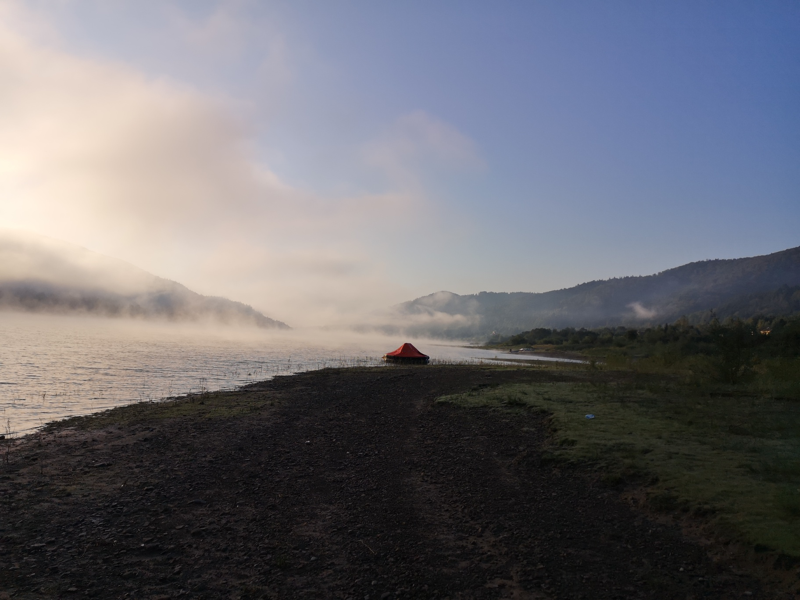

Ostatnie wydarzenia:

W minioną sobotę 20 lutego 2021 roku, nasi ratownicy razem z członkami Ochotnicza Straż Pożarna w Kryspinowie doskonalili swoje umiejętności w ratownictwie lodowym. Członkowie szkolenia mogli zaznajomić się z technikami ratowania poszkodowanego za pomocą specjalistycznego sprzętu np. z użyciem sań lodowych, jak i przy użyciu standardowego wyposażenia Krakowskiego WOPR.
W dniach takicha takich nasza grupa interwencyjna cwiczyla dzialania ratownicze nad pieknym jeziorem
Stop utonieciom! - takie nazwy nosza nasze projekty w akcji budzet obywatelski, liczymy na panstwa glosy